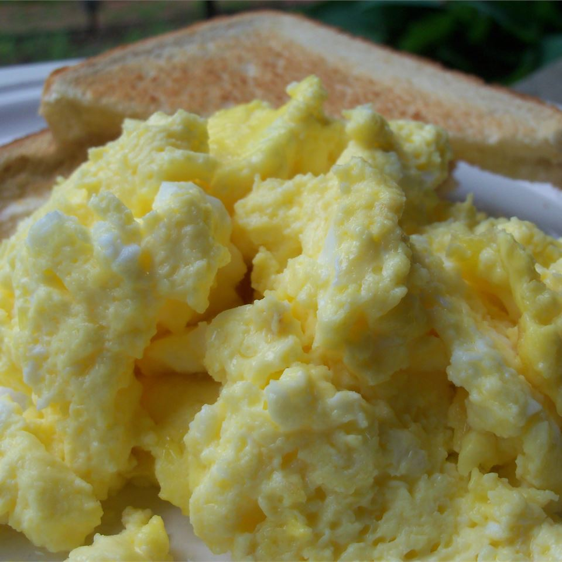

Oven Scrambled Eggs

Description
The light and fluffy scrambled eggs are great with Bacons and Pancakes!
Easy to Cook , Easy to Eat !
Ingredients (4 servings)
- 2 ½ tablespoons and ½ teaspoon butter or margarine, melted
- 8 eggs
- ¾ teaspoon salt
- ¾ cup and 1 tablespoon and 1 teaspoons milk
Steps
- Preheat the oven to 350 degrees F (175 degrees C).
- Pour melted butter into a glass 9x13 inch baking dish. In a large bowl, whisk together eggs and salt until well blended. Gradually whisk in milk. Pour egg mixture into the baking dish.
- Bake uncovered for 10 minutes, then stir, and bake an additional 10 to 15 minutes, or until eggs are set. Serve immediately.